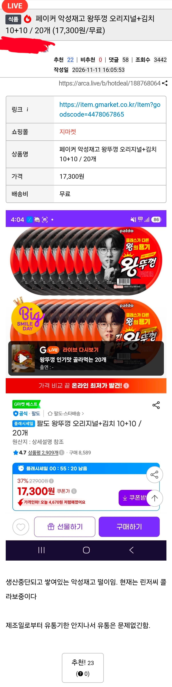

개고기 네 이노오오오오오옴!
감히 신을 몰아내?!

개고기 네 이노오오오오오옴!
감히 신을 몰아내?!
2만원으로 올랐네 딱히 세트로 사먹을 가치는 없는듯
왜국까지 엄청 나와서 요즘 한국마트 가면 꼭 있는듯
일본 자주가시나봐요
왕뚜껑 맵기만 맵고 감칠맛이 없어졌다
예전 그맛이 1도 안남
겨울 밤바다로 낚시가서 가스버너로 물 끓여 부워서
먹었던 그기억은 20 년이 지난 지금도 기억이 난다.
심적으로 힘들어서 혼자 있고싶던 그시절
나에겐 영혼을 위한 한그릇 이었다.
이젠 그맛을 더이상 맛보지 못하게 되서 슬프다
5개였나 6개 번들 3300원에 사먹은 기억있어서 저 가격도 싼건 아니네